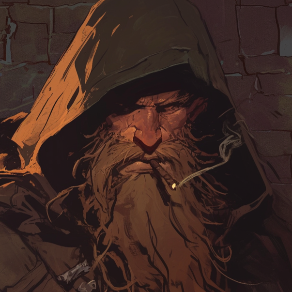

| FARGRIM |
|

|
| Race: |
Dawrf |
| Age: |
Very old |
| Height: |
148cm |
| Faction: |
Northern Marches |
| Ocupation: |
Mercenary |
| Connections: |
Silver Fang Mercenaries |
Fargrim
As old as the mountain, and twice as stubborn. Fargrim’s the kind of dwarf you don’t ask questions unless you want to lose teeth, or worse, get an answer. He’s one of the last of his kind still wandering Fae’Gir, long after most of his people retreated beneath stone or vanished.
He smokes his pipe, growls through a beard thick with soot, and fiddles with that damned rifle — a dwarven thing, ancient and loud, full of gears and smoke and secrets the Dawnlands have been trying to copy for decades. They say he helped design the first powder-forged weapons, back when science and blood still shared a handshake.
He doesn’t fight for glory, and he sure as hell doesn’t fight for free. But if Fargrim’s watching your back, there’s not much that gets through. He’s cranky, slow to trust, and twice as sharp as he looks.